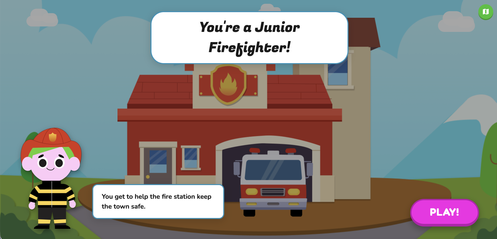

Junior Firefighter
Created a web game to teach children aged 7–9 about wildfire safety preparedness in hopes to empower them in case an evacuation situation arises through an internship with the San Diego Supercomputer Center following a 1st place win for this concept at a design challenge.
